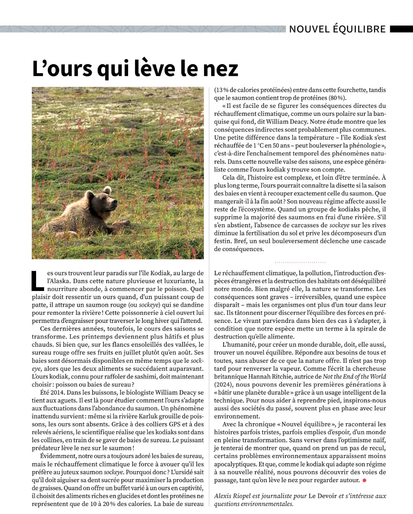
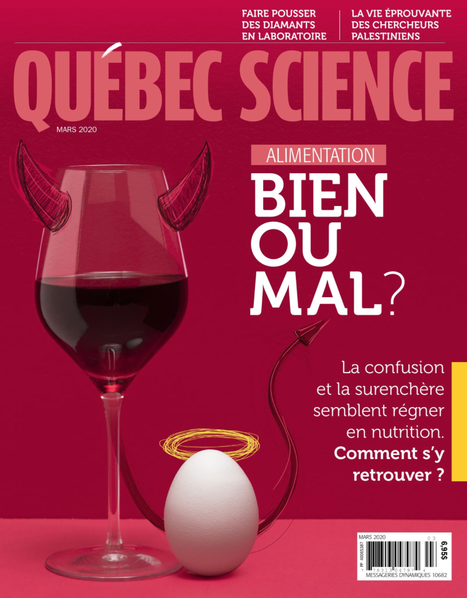
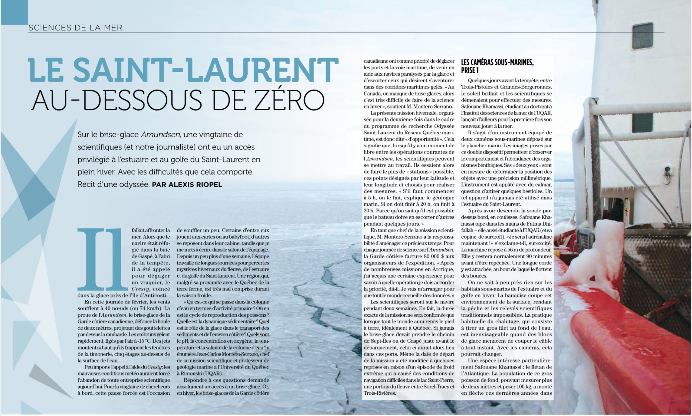
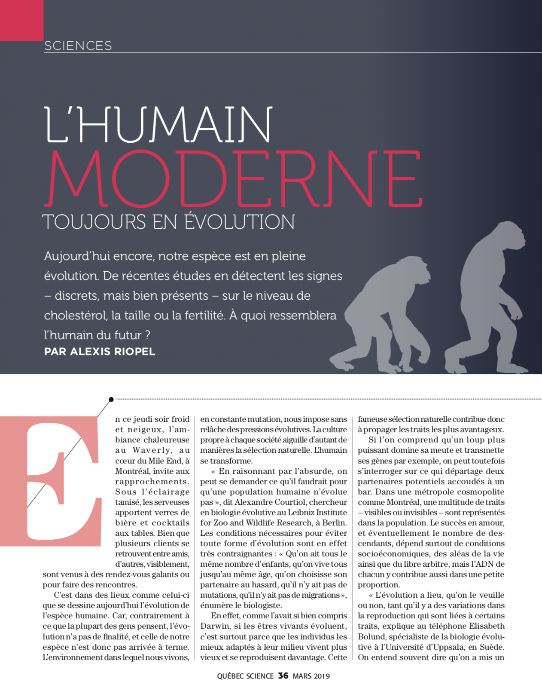
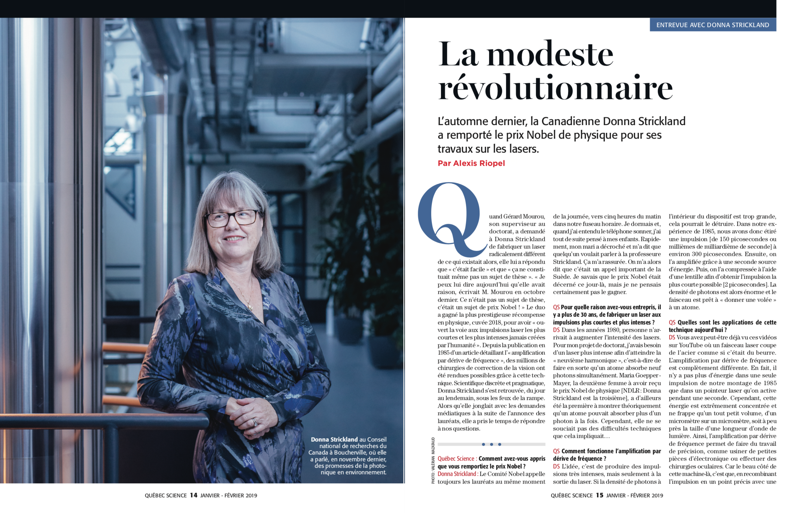
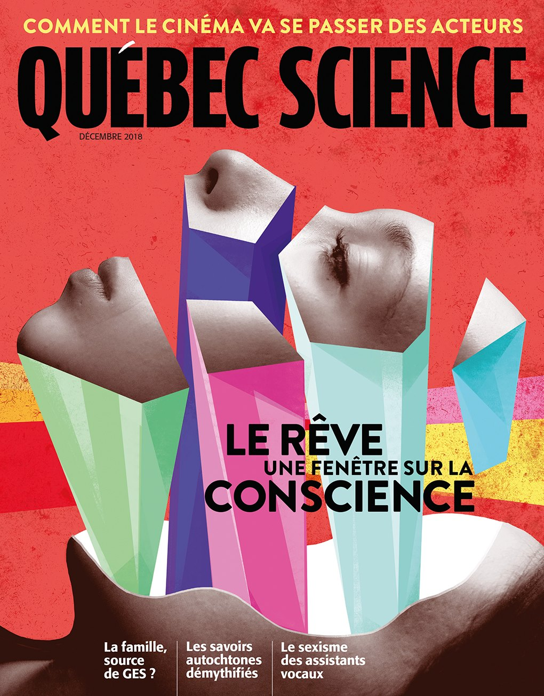
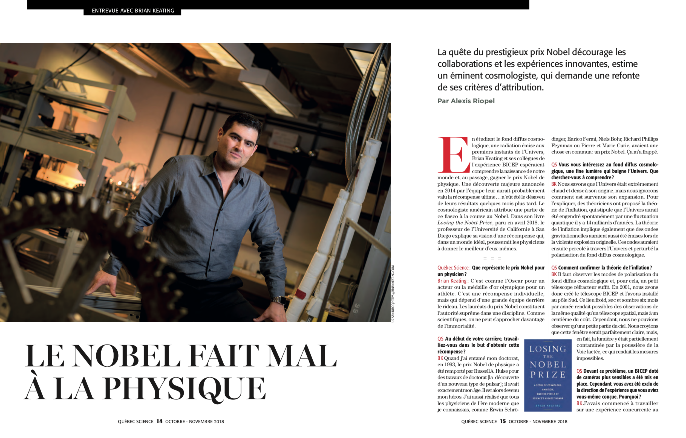

Alexis Riopel
riopelalexis [arobas] gmail.com
Mémoire de maîtrise
Curriculum vitæ
Portfolio
Le Devoir
Québec Science
Le Monde
Radio-Canada
Balados
Livres
Autres
Photos
Pérou, Bolivie et Chili
Nouvelle-Zélande
Odyssée Saint-Laurent
Hawaï
Québec Science — septembre 2024

Québec Science — juillet 2024
Québec Science — mars 2024

Québec Science — mars 2020

Québec Science — juin 2019

Québec Science — mars 2019

Québec Science — janvier-février 2019

Québec Science — décembre 2018

Québec Science — octobre-novembre 2018